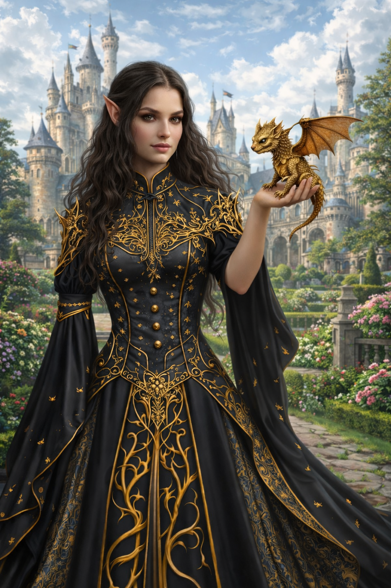
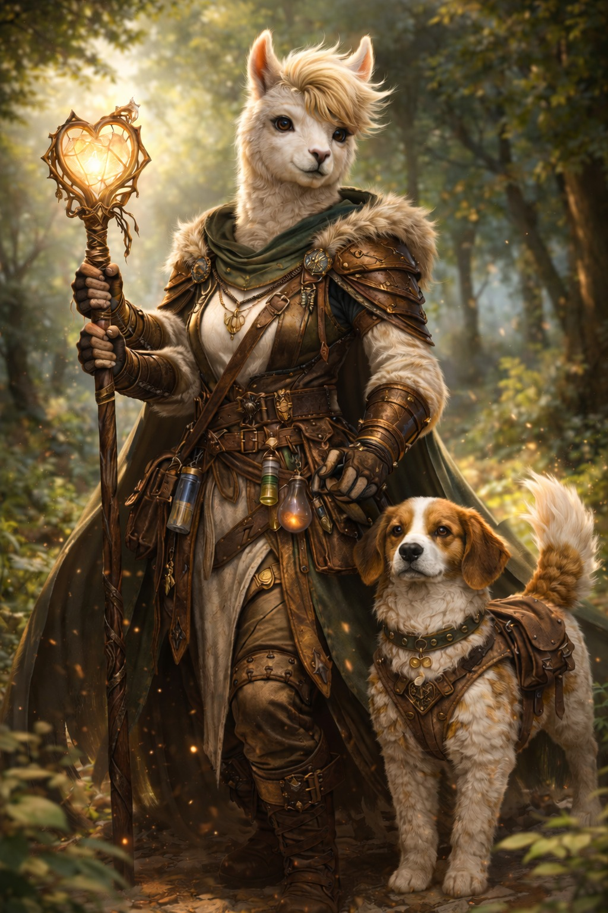
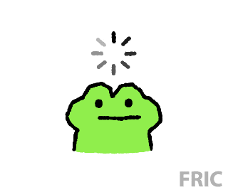

Welkom in FJORN. Je bent beland in een fantasiewereld vol leven en gevaar. Het is nu aan JOU. Ben je bereid? Hoe zal je eruit zien, wat zijn je speciale vaardigheden. Denk er goed over na! Want wanneer het zover is zal je niet meer kunnen veranderen. Hopelijk kom je levend terug uit Fjorn.
Landkaart
Personages
Maak hier jouw personage: Klik hier

Ik ben prinses Beatrijs, kroonprinses van Malvenië. Ik word opgeleid tot de volgende koningin. Daarbij is het mijn taak jullie met groot genoegen te ontvangen.
Maak kennis met mijn draakje, Emas. Hij spuwt blauw vuur en doet metaal instant smelten. Daarnaast heeft hij nog een andere magische gave, maar dat is nog een geheim.
Ikzelf ben half draak en half elf. Ik kan dus vernaderen in de gedaante van een draak, maar dit zal je me nooit tot zelden zien doen.

Ik ben Alpheira, een alpacadius uit het verre rijk Alpacadiomus. Al jaren ben ik de trouwe rechterhand en beschermer van de prinses. Mijn kracht ligt niet in spierkracht, maar in mijn empathie: ik voel wat anderen voelen.
Met mijn staf en mijn huisdier Nimbus aan mijn zijde blijf ik haar helpen, wat er ook
Mijn naam is Bamibeer Broodjesmeer.
Ik ben een stoere draak, zo sluw als een vos, zo sterk als een beer… en eerlijk is eerlijk: soms zo dom als een ezel. Dat laatste zie je ook meteen, want ik draag het hoofd én de staart van een ezel. Mijn lichaam is dat van een machtige draak, mijn hart klopt als dat van een beer, en ik loop rond op ganzenpoten die meer lawaai maken dan me lief is. Mijn schubben zijn versierd met talloze piercings en tattoos, elk met een eigen verhaal.
Ik bezit bijzondere krachten: ik kan mezelf onzichtbaar maken wanneer gevaar dreigt, en als ik boos word spuug ik bliksem uit mijn bek. Aan mijn zijde loopt altijd mijn trouwe huisdier, een reuzenkameleon, die net zo goed kan verdwijnen als ik.
Sinds mijn jeugd ben ik de bewaker van de prinses. We zijn samen opgegroeid, schouder aan schouder, en kennen elkaar beter dan wie dan ook. Haar beschermen is geen plicht, maar mijn levensdoel. Zolang ik ademhaal en mijn bliksem brult, zal geen ijsdraak of duister wezen haar ooit kwaad doen.

Hallo, ik ben Bart de Griffioen en ik leef in de buurt van Hogwarts en de Schotse Highlands. Mijn hobby's zijn vliegen en dansen.
Ik zou graag schilder worden maar ik mag niet van mijn ouders.
Ik ben 23 jaar en heb Fysica en Sterrenkunde gestudeerd, momenteel werkloos.